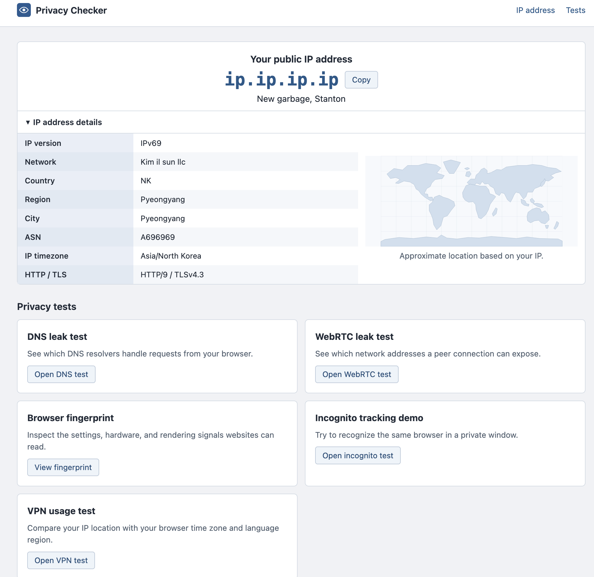

Web tool
Privacy Checker
See what your browser and network reveal when you visit a website.

What can a website learn from a visit?
The homepage shows your public IP address, approximate location, and network details. The DNS and WebRTC tests show which resolvers handle requests and which addresses a peer connection can expose.
The fingerprint page shows browser and device signals a website can read. The private-window demo tries to recognize a browser from those signals, and the VPN test compares your IP location with your browser’s time zone and language region.